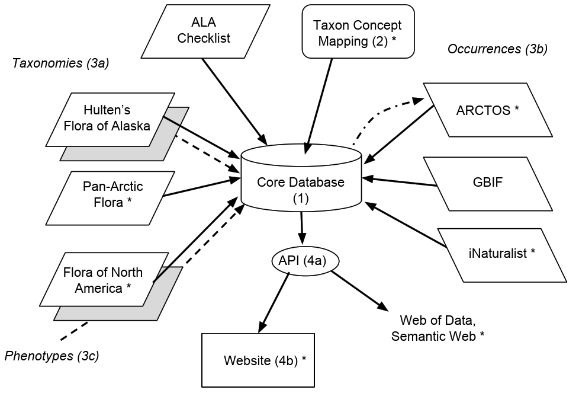

Blog 1: Project roadmap
Posted by Cam on 2018-08-17
Hi! Welcome to this development blog, this website, and this project. Steffi and I were so pleased to get this NSF funding — many, many thanks to the ABI panelists, the four reviewers, and to NSF and US taxpayers.
In this blog, I’ll lay out the main steps in the development of the informatics infrastructure. (For a general overview of the project, see here.) Here is an overview diagram:

The software and data elements to be constructed and integrated are:
A core database: a standard MySQL (MariaDB) database, running on a web-hosting platform (Dreamhost). Over the years I’ve played with many database paradigms, including XML databases (ExistDB) and graph databases (e.g., 4store, Allegrograph, Neo4j), but in the end I think a standard RDBMS will be the easiest to build, manage and build on. Our database will store the master copy of all new data, and will also temporarily cache some resource for faster retrieval of integrated data.
Names management. Explicitly addressing the problems arising from shifting taxonomic circumscriptions over time (the “Taxon Concept problem”) will be a core goal of this project. For more on this issue, try Franz et al. (2008), and check these notes I made after a discussion at the recent iDigBio meeting in Berkeley. In short, for each taxon name we will give different usages of that name, and indicate the relationships of the circumscription in one name to that of the other (“wider”, “narrower”, etc.). At the end, we need a “currently accepted name usage” for each taxon which will become the definitive name in the new Flora of Alaska. The starting point for this is the list developed by David Murray and colleagues at ALA over the past decades.
Data integration. The bulk of the work for this project will be in merging different data resources. Since few of these are in a standard format (i.e., with Darwin Core fields), and because names (and authorities) seldom match across resources, the merging will require “bespoke” solutions for each resource.
Taxonomies. The ALA list is the starting point, and the names will be matched to names in The Plant List (thus providing name GUIDs). From here we will merge the names and metadata in the Panartic Flora (PAF), of which Dave Murray is an editor. We have permission from Stanford University Press to digitize Hultén’s “Flora of Alaska” and after OCR we will merge the names and metadata in Hultén into the DB. Names from the Flora of North America project will also be ingested.
Occurrences. Point maps in floras are invaluable to users as indications of the ranges of taxa. We will merge different occurrence data resources into the core DB. The most important data are the specimens in our own herbarium. ALA was one of the first plant collections to be fully digitized, and the data are stored in the ARCTOS collections management system. Once names have been reconciled, we can use the ARCTOS API to extract locations and metadata to display on a map for each taxon. Specimens beyond ALA will be similarly linked using the GBIF API. We will also map and link to non-specimen occurrences in in iNaturalist and vegetation samples such as the USFS FIA.
Phenotypes. Most phenotypic information for Alaskan plants exists as text descriptions in floras and monographs. For each taxon in Hultén we will extract the OCR’d text block, but will also attempt some text decomposition (e.g., with the ETC tools). We are working with with James Macklin and colleagues at the Flora of North America and may be able to adopt FNA standard terms. In order to make the new Flora of Alaska searchable by phenotype, we will also be developing a matrix of six standard characters for all taxa.
Data output. Finally we will share the integrated data via a comprehensive, well-documented web API (Application programming interface). This will permit the easy integration of our data products into other projects. We will develop a visual, development web portal to the data to ensure all elements needed for the eventual “official” website of the Flora of Alaska are available and logically integrated. Following one influential stream of website design philosophy, we will generate web pages via API calls, for maximum development efficiency. The API will also serialize the data as RDF, and we will contribute to and explore the potential for a rich biodiversity knowledge graph. It is our intention that all data in the database will be fully accessible to the public, and we will pay close attention to attaching licenses to the data products so as to make them as easy as possible to integrate into further resources.
Some of you by now may be asking “All this data stuff is OK, but what about a new paper Flora of Alaska?”. Well… first a reminder that this NSF project is just part of the full Flora of Alaska project. To realize the latter, there will be new taxon reviews and keys (e.g., see here for Draba), and the Flora team will try to capture as much of the experience of Alaskan botanists as possible. The timeline of the full Flora will be longer than for this project. However… we hope and anticipate that the data captured during this project will permit the automated generation of much of the text in any new new paper Flora (of which the can be several, each tailored to a specific audience).
The reviews of our proposal confirmed that a major opportunity of this project is to be a model for other projects that are integrating data around taxon concepts. This role as a model activity is best served not only by presenting a working, well-documented product at the end of three years, but also by sharing the logic and stories around each of the significant steps along the way. So we plan to tell this story in these blog pages as we go forward. Please check back regularly, and subscribe to the RSS feed. And please do leave comments below, or send them to us directly.
Thanks for reading!